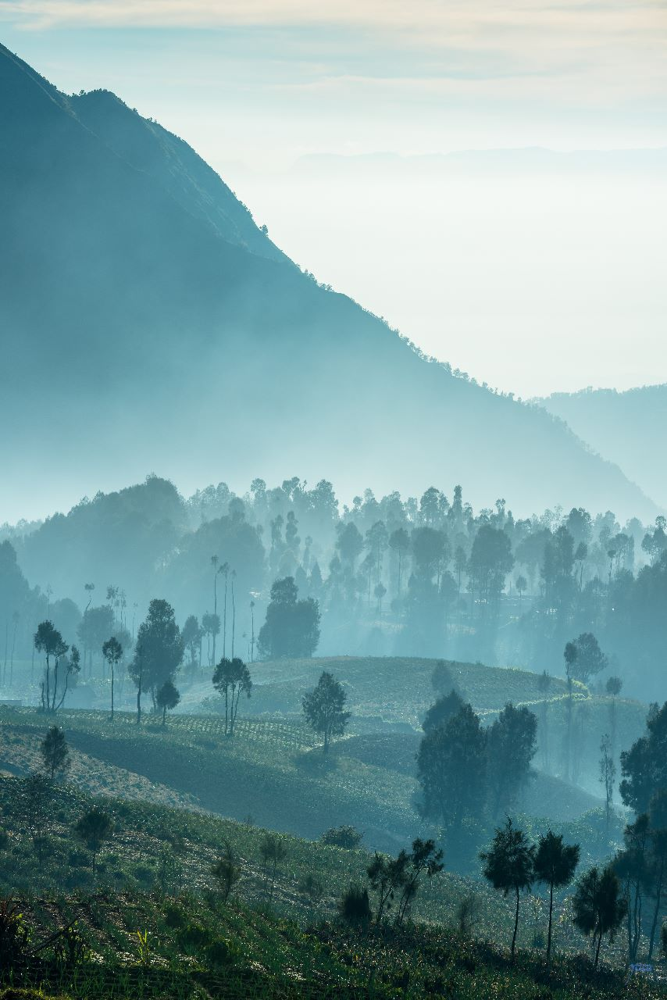
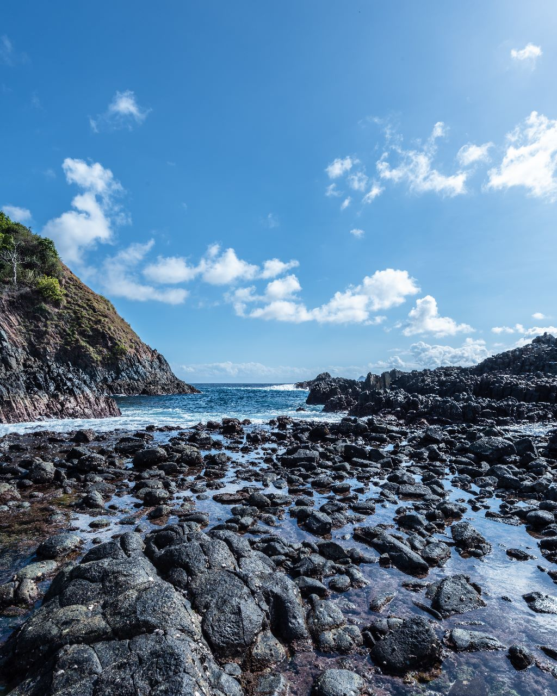
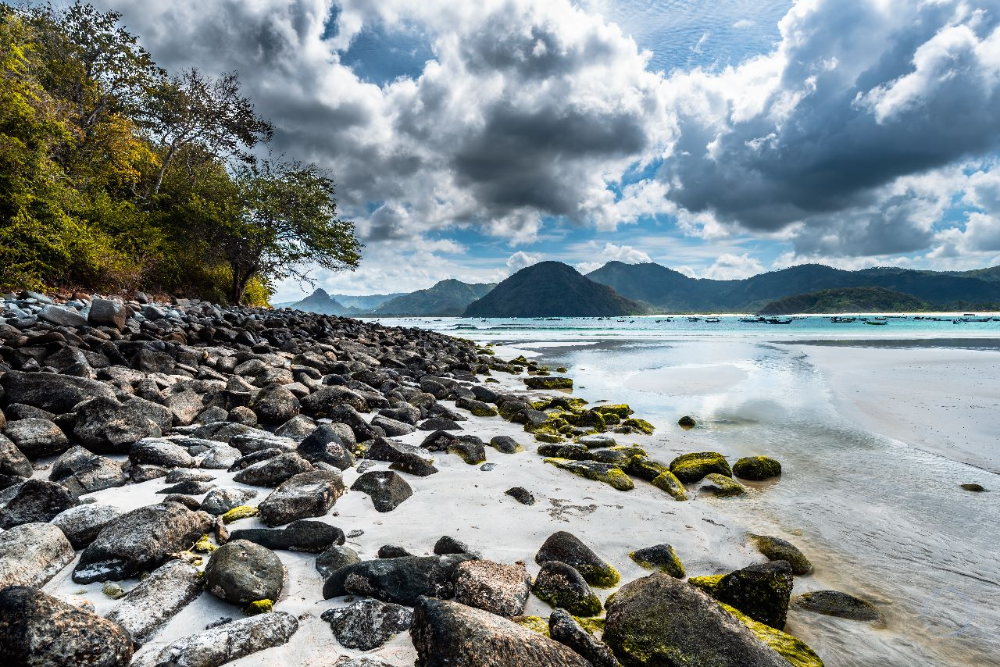
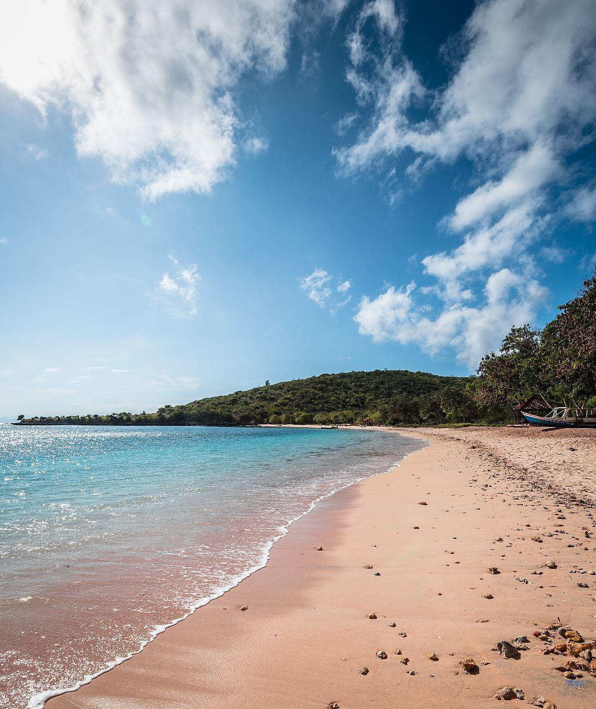

The Landscape Album specifically portrays the scenery of Indonesia while also capturing the history and lifestyle of different Indonesian regions. More often than not we lack to consider the beauty of the places that aren't particularly known. Being born in Indonesia, these monuments are what I have seen throughout my childhood and I hope you can see the beauty in my home, through my lens.
X
X
| Image # | Location | Description |
|---|---|---|
| 1 | Hutan Amora | This is a traditional Batak house. It has triangular stilts accessed by wooden steps. The house is built in 3 levels: The den on the very bottom, The living room on the middle, and the opening roof. |
| 2 | Lombok | The mist is summarized Indonesia in its beauty. A mystical land of mystery, hidden in its mystery lies natures extrodinary features. |
| 3 | Hutan Amora | The mist is not natural. It is created by the millions of toxic smoke released into the year every year. The antenna serves |
| 4 | Lombok | The cliff is the edge of land that surrounds Indonesia's biggest lake. Although, it is still intact, the land has shrunk due to the volcanic eruptions in the island. |
| 5 | Hutan Amora | Not living in the city or having access to traditional supermarkets, my tribe has grown their food for centuries. The corn maize is the pinnacle of agriculture that my tribe finds their life on. |
| 6 | Danau Toba | The impact of coronavirus is still felt in Indonesia, especially it's rural areas. People who have suffered have taken new altarnatives into making money. This one particular man rents boats. |
| 7 | Bali | The lonely island is one of my favorite pictures. It serves as a temple for buddhist to pray. The temple was not always isolated. As the water levels have increased, the land that bridges the mainland and the lonely island slowly dissapears. | 8 | Lombok | I am deeply saddened by this picture. The pictures shows the destructions of corals as pollution and dangerous water levels anhilate them and wash them up the shore. It only took one year for the damage. As a community, we must preserve this beautiful land. |